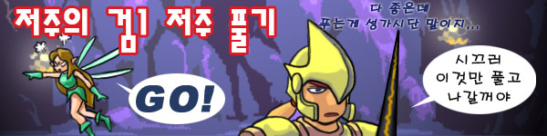
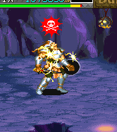

This page was saved using
WebZIP 7.0.2.1028
on 04/09/17 오후 9:44:35.
Address:
http://crassus.ivyro.net/manual/items/cs1/cs1.html
Title:
저주의 검1 풀기 •
Size:
14025
메인 매뉴
|
무기류
|
장비류
|
도구류
|
보석류&기타
|
상점 정보
전설의 검 풀기
|
LB오일 정보
|
상자 정보
|
아이템 콜렉션

원코인으로 "저주의 검1(Cursed Sword 1)"을 풀어봅시다.
저주의 검1을 54번 휘두르면 저주가 풀리면서 SOM 최강의 무기인
전설의 검(Sword of Legend)
으로 변신을 합니다.
그러나 그 54번을 휘두르는 도중 20~30번 정도 착용자의 머리위에 해골표시가 뜨면서
온몸이 전기충격을 받으며 데미지를 입는데
이 데미지가 작지 않은 수치이므로
(대략 16) 그냥 생각없이 휘두르다 보면 풀기도 전에 죽고 맙니다.
따라서 피해를 최소화 하는 방법이 필요합니다.

1.
Ring of Cure Serius Wounds
(이하 CSW링)을 이용한 저주 풀기.
모아온 CSW링과 이후로 나오는 포션들을 이용해서 저주 풀기를 시도하다 입은 데미지를 치료 해 줍니다.
CSW링이 많이 나오는 것이 아니므로 놈(Gnome)마을의 상점을 들러서 최대한 사오는 것도 좋습니다.
2. 클레릭, 혹은 엘프의 주문의 도움을 받아서 저주 풀기.
해골표시가 뜨는 시점에 클레릭은
Striking
,
Cure Serius Wounds
,
Cure Critical Wounds
,
엘프는
Invisibility
를 걸어줍니다. 이 주문들은 시전받는 파티원의 행동을 취소 시키는 효과가 있기 때문에
저주의 검의 데미지를 입는 행동도 취소 시킬 수 있고 취소가 제대로 됐다면 데미지 또한 입지 않습니다.
따라서 2인 이상 진행시 파티원에 클레릭, 엘프가 있다면 좀 더 쉽게 저주를 풀 수 있습니다.
물론 다른 클래스의 파티원이 CSW링이나 인비지빌리티 링을 이용할 수도 있습니다.
다만, 데미지는 입은 것으로 판정이 되기 때문에 데미지를 입으면 깨지는 장비품은 전부 깨지고 맙니다.
클레릭의 Cure Serius Wounds, Cure Critical Wounds의 경우 1번의 CSW링처럼 사용해도 됩니다.
3. 백스텝/점프를 이용한 저주 풀기.
이 페이지에서 가장 중요한 내용입니다. 유일하게 혼자서 데미지 없이 저주를 풀 수 있는 방법이기 때문입니다.
백스텝 후 착지 직전에 공격을 하면 해골마크는 뜨되 데미지를 입지 않습니다.
그 착지 직전의 타이밍이 참 어려워서 조금이라도 늦거나 빠르면 데미지를 입으며 완벽하게 성공하긴 무척 힘듭니다.
하지만 저주를 풀다가 입는 데미지를 획기적으로 줄일 수 있습니다.
또한 2번의 방법과는 달리 해골표시가 뜨더라도 장비품이 부셔지지 않습니다.
저주를 한참 풀고 있다 보면 빨리 좀 가라고 성화부리는 요정 아가씨
드워프는 백스텝을 하면 뒤로 구르기가 나가지만 점프를 이용 해서 풀 수 있습니다.
제자리 점프나 전진 점프를 한 후 착지전에 휘두르면 마찬가지로 해골마크는 뜨지만 데미지를 입지 않습니다.
(물론 타이밍은 마찬가지로 쉽지 않습니다만)
시프는 점프 후 착지시 딜레이가 없어서 방법이 없습니다. 그냥 1번과 2번의 방법을 이용하는 수 밖에 없습니다.
1번의 방법과 백점프를 병행한 저주 풀기
1번의 방법과 전진 점프를 병행한 저주 풀기
4. 버그를 이용한 저주 풀기
플레임/프로스트 샐러맨더 스테이지에서 1명 이상의 플레이어가
'레비테이션 부츠(Boots of Revitation)'
를
사용하여 부유상태로 있다면
보스를 격파하여도 부유상태로 있는 플레이어가 방향키↑를 유지 하는 한
게임이 더 이상 진행 되지 않습니다. 그 상태에서 그 외의 플레이어가 저주의 검1을 휘두르면
해골표시가 뜨더라도 데미지를 입지 않습니다. 이 것을 이용하여 열심히 휘둘러서 저주를 풉니다.
레비테이션 부츠를 이용하는 플레이어는 저주의 검1을 쥐고 있는 플레이어보다 순서가 뒤쪽이어야 합니다.
즉, 저주의 검1을 쥔 플레이어가 1p인 경우 2~4p가 날아야 하고 2p라면 3~4p, 3p라면 4p가 날아야
버그가 성립되는데 따라서 4p가 저주의 검1을 가지고 있다면 이 버그로는 풀 수 없습니다.
또다른 버그?
저주의 검1을 얻을 수 있는 라파엘의 동굴 30층을 제외한 지역에서 백스텝(혹은 점프)을 이용한 저주 풀기 시도시
첫번째 시도는 성공을 하였다 하더라도 무조건 데미지를 입는 현상이 있습니다.
이 현상은 저주 풀기 시도를 성공하기 전까지 한번도 데미지를 안입었을 때에 한정됩니다.
go to Top
2007 Crassus & legon. All rights reserved.